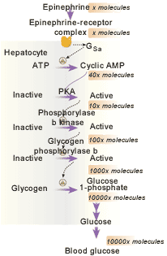

The Biology Project > Cell Biology > Cell Signaling > Problem Set
Cell Signaling Problem Set
Problem 8: Protein Kinase Cascades
Tutorial to help answer the question
Some receptors for growth factors activate a protein kinase cascade, with the participation of multiple enzymes to effect a change in gene expression. Which of the following statements about a protein kinase cascade are true?
A. Multiple steps allow the amplification of the signal. B. External signals can lead to changes in gene expression. C. Multiple steps leading to kinase activations can result in cells having different responses, depending on the presence or absence of target proteins. D. Multiple steps in an activation mean that abnormal stimulation of a cell response such as growth can occur with mutations in more than one gene. E. All of the above are true. Tutorial
Protein kinase cascade
Signaling systems need to be responsive to small concentrations of signaling molecules (ligand), and yet may need to cause a rapid cellular response.
The figure shows a liver receptor system that binds the hormone epinephrine causing a quick release of glucose into our blood.
Epinephrine is released when we are scared (fight or flight response), and binds to its receptor in hepatocytes. A G-protein that stimulates adenyl cyclase is released. The figure shows how the signal response is activated multiple times by each step in the cascade.
Some cascade systems modify gene expression by activating kinases that enter the cell nucleus (see question 2)
Problem 8 | Answer | Problem 9
The Biology Project > Cell Biology > Cell Signaling > Problem Set
Department of Biochemistry and Molecular Biophysics
University of Arizona
May 2002
Revised: August 2004
Contact the Development Team
http://biology.arizona.edu
All contents copyright © 2002-04. All rights reserved.